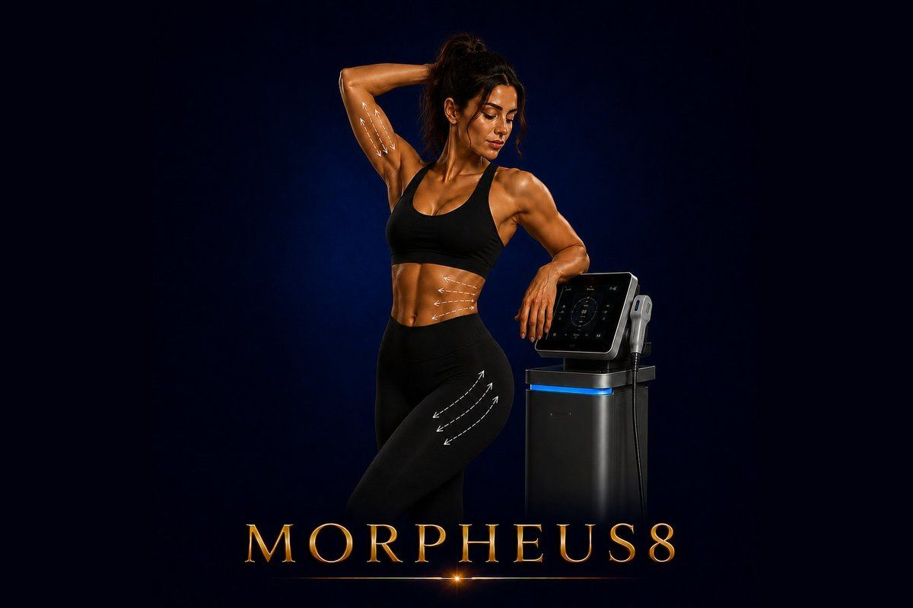

Body Shaping
Deep RF microneedling for the body — treat stretch marks, post-pregnancy belly, loose skin, and body texture from the inside out.
✓ Full medical content — verified for SEO and patient information.

About
Morpheus8 Body is the body-specific version of InMode's flagship RF microneedling platform. While the face version of Morpheus8 reaches up to about 4mm to address acne scars and facial skin remodeling, Morpheus8 Body uses larger applicators and deeper needle settings — designed specifically for the thicker skin and larger surface areas of the body. The technology combines two of the most effective skin remodeling tools in modern dermatology — microneedling and radiofrequency — into a single device. Tiny insulated needles are precisely delivered into the deeper layers of the body's skin, releasing controlled RF energy from the needle tips. This creates micro-channels in the skin while simultaneously heating the deeper layers to stimulate massive new collagen and elastin production — far beyond what any single technology can deliver. Morpheus8 Body is particularly known in Egypt for one application above all others: treating stretch marks on the abdomen, thighs, arms, and buttocks. Stretch marks have historically been very difficult to treat — Morpheus8 Body is currently considered one of the most effective non-surgical treatments available globally for this concern.
Why It Works
The Process
90 minutes depending on the area treated: 1
Consultation & assessment Your doctor evaluates the area, identifies your specific concern (stretch marks, post-pregnancy laxity, loose skin), and determines the appropriate needle depth and energy level. 2
45 minutes before the session for comfort — this is standard for all Morpheus8 Body sessions. 3
Morpheus8 Body application The Body-specific handpiece delivers tiny microneedles into the skin at the depth selected for your concern (body protocols typically use depths from 2mm to 4mm — deeper than face)
RF energy is delivered through the needle tips, simultaneously creating micro-channels and heating the deeper layers
You'll feel pressure and warmth — well-tolerated with the numbing in place. 4
Post-treatment care A soothing serum is applied
3 days
Tiny grid-like marks from the needles may be visible for several days
Normal recovery
6 months as new collagen is built
6 weeks apart
Who It's For
Safety First
Treatment Comparisons
Morpheus8 Body vs. Body FX Body FX uses surface RF + vacuum + electrical pulses — gentle, no-downtime fat reduction and surface skin tightening. Morpheus8 Body delivers RF deep into the dermis through tiny needles for stronger collagen remodeling and stretch mark treatment, with a few days of downtime. Different goals: Body FX for gentle, ongoing contouring; Morpheus8 Body for transformation and stretch marks.
HIFU Body uses focused ultrasound to reach deeper layers for non-surgical body lifting. Morpheus8 Body works at the dermis level with RF microneedling — better for stretch marks, body skin texture, and post-pregnancy abdomen. HIFU Body is for stronger lifting; Morpheus8 Body is for skin remodeling and stretch marks. They can be combined.
EMTONE is purpose-built for cellulite. Morpheus8 Body addresses stretch marks, loose skin, and texture but is not the primary tool for cellulite. They complement each other in comprehensive plans — EMTONE for cellulite, Morpheus8 Body for stretch marks and remodeling.
Tesla Former builds muscle. Morpheus8 Body remodels skin. Completely different layers and goals — often used together: Tesla Former for muscle definition, Morpheus8 Body for skin smoothness on top.
Fractional laser (CO2, Erbium) can improve stretch marks but carries pigmentation risk on darker skin and significant downtime. Morpheus8 Body delivers RF directly into the dermis through microneedling — safe across all skin tones, with shorter recovery, and currently considered one of the most effective non-surgical stretch mark treatments globally.
BodyTite is a minimally invasive fat-removal and skin-tightening procedure with stronger results in one session. Morpheus8 Body is non-invasive RF microneedling that requires no incision and minimal downtime. They're often combined: BodyTite to remove the volume, Morpheus8 Body to refine the surface.
Investment
Morpheus8 Body
The price of a Morpheus8 Body session at Hollywood Clinic is set after a free consultation and depends on: Treatment area — abdomen, thighs, arms, buttocks, single area or multiple areas.
Final pricing is determined after a free consultation, because every case is different.
Book Free ConsultationWhy Hollywood Clinic
Dr. Marwa Magdy — Aesthetic Dermatologist & Advanced Injector. Morpheus8 is her signature device with 5,000+ cases performed — one of the highest case volumes in Egypt. She is the go-to doctor at Hollywood Clinic for advanced Morpheus8 Body protocols, especially for complex stretch marks, post-pregnancy abdominal remodeling, and combination treatments
Dr. Rana Safwat — Dermatology, Laser & Non-Surgical Aesthetics Consultant, 12+ years of experience. Ideal for patients who want Morpheus8 Body integrated into a wider skincare and body plan combining lasers, body treatments, and Morpheus8 in a structured long-term protocol
FAQ